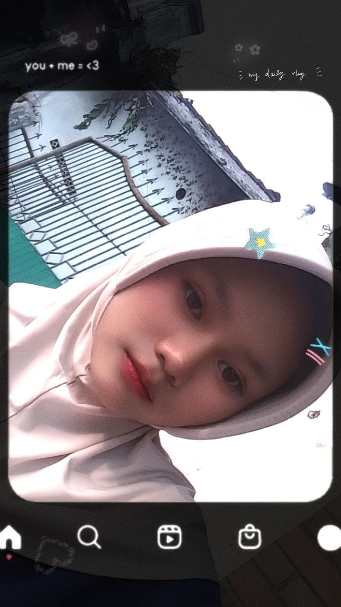

Selalu Belajar
Terbuka untuk teknologi dan pengalaman baru.
Crafting Simple & Interactive Websites
I enjoy creating simple and beautiful websites while exploring new ideas, improving my skills, and enjoying every step of the learning journey.
<hello />

01 — About me
Halo! Saya Tatik Nur Aliyah, siswi SMK jurusan Rekayasa Perangkat Lunak (RPL) yang memiliki minat pada pengembangan website dan desain antarmuka.
Saya senang mempelajari teknologi baru lalu menerapkannya lewat proyek sederhana. Bagi saya, setiap proses adalah kesempatan untuk bertumbuh dan membangun sesuatu yang lebih baik.
See my learning journey →Terbuka untuk teknologi dan pengalaman baru.
Mengeksplorasi desain dan pengembangan website.
Mengerjakan setiap detail dengan rapi dan terstruktur.
Meningkatkan kemampuan sedikit demi sedikit.
02 — Skills & learning
Teknologi dan tools yang sedang saya pelajari dalam perjalanan sebagai siswi RPL.
Membangun struktur dasar halaman web yang semantik.
✦ Currently LearningMembuat tampilan yang rapi, menarik, dan responsif.
✦ Currently LearningMenambah interaksi yang membuat web terasa hidup.
✦ Currently LearningMengenal komponen siap pakai untuk membangun lebih cepat.
✦ Currently LearningMembuat wireframe dan desain antarmuka sederhana.
✦ Cukup FamiliarBelajar mengelola versi dan menyimpan proyek.
✦ Currently LearningNext on my list
03 — Beyond Coding
Outside of coding, I enjoy spending my free time doing simple things that help me relax, recharge, and find new inspiration.
Music helps me relax, improve my mood, and stay focused while learning or working on new projects.
I enjoy trying new recipes and exploring different flavors. Cooking teaches me creativity, patience, and attention to detail.
Watching anime and live streams is one of my favorite ways to unwind. They inspire creativity and help me recharge before learning something new again.
04 — Selected works
Ruang untuk mendokumentasikan proses belajar dan karya yang terus berkembang.

Website toko roti modern dengan tampilan responsif dan fokus pada pengalaman visual.
View Project ↗Website portfolio pribadi yang dibuat untuk memperkenalkan diri, membagikan perjalanan belajar, serta menampilkan project yang telah saya kerjakan.
✦ You're viewing this websiteAlways learning, always building.
I'm currently exploring new ideas and improving my skills. This space will soon be filled with another project that reflects my learning journey.
Stay Tuned ✨05 — Experience
Saat ini saya sedang menjalani Praktik Kerja Lapangan (PKL) di Perwira Media Solusi sebagai bagian dari proses pembelajaran di SMK jurusan Rekayasa Perangkat Lunak. Selama PKL saya terus belajar, beradaptasi dengan lingkungan kerja, serta meningkatkan kemampuan teknis dan kerja sama tim.
COMPANY
06 — My progress
Menumbuhkan rasa ingin tahu tentang cara kerja teknologi.
Menyusun struktur dan membuat tampilan web yang menarik.
Menambahkan interaksi pada halaman yang dibuat.
Menerapkan setiap pelajaran ke dalam karya nyata.
Mengenal kebiasaan kerja yang lebih rapi dan terorganisir.
07 — Education
Rekayasa Perangkat Lunak adalah ruang saya untuk mempelajari dasar pemrograman, pengembangan website, basis data, dan desain UI/UX.
STUDENT OF
08 — Get in Touch
Terima kasih sudah mengunjungi portofolio saya. Jika ingin berdiskusi, berkolaborasi, atau sekadar menyapa, jangan ragu untuk menghubungi saya melalui kontak atau media sosial berikut.